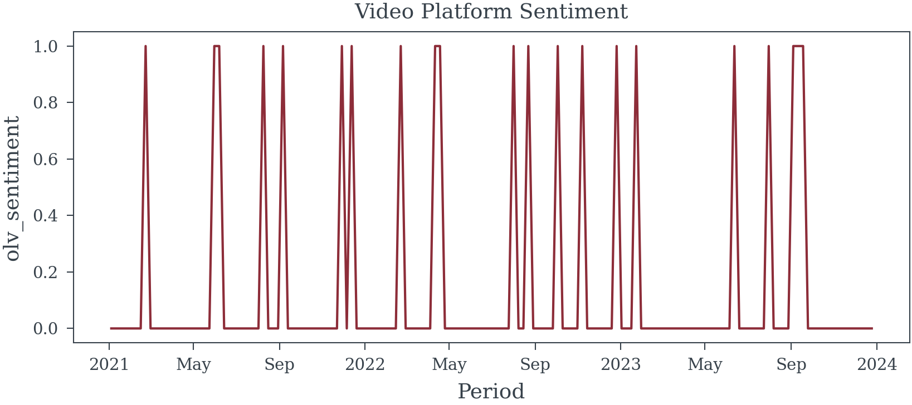

| paid_search_impressions | search_query | price | sales | |
|---|---|---|---|---|
| paid_search_impressions | 1.00 | 0.93 | -0.34 | 0.90 |
| search_query | 0.93 | 1.00 | -0.33 | 0.91 |
| price | -0.34 | -0.33 | 1.00 | -0.19 |
| sales | 0.90 | 0.91 | -0.19 | 1.00 |
When is Multicollinearity an Issue?
A causal perspective
Multicollinearity arises when independent variables in a regression model are highly correlated, leading to challenges in estimating individual effects accurately. This issue can inflate standard errors, reduce the precision of coefficient estimates, and complicate the interpretation of results. Understanding when multicollinearity becomes problematic is crucial for developing robust regression models. This section explores the conditions under which multicollinearity affects model performance, discusses its implications, and provides strategies for detection and mitigation.
The DAG
How to read a DAG
A Directed Acyclic Graph (DAG) serves as a model of causality, where directional relationships between nodes indicate that causes flow from one node to another along the arrows, forming a distinct pathway of influence. Each arrow represents a causal link, signaling how changes in one node could potentially impact another. In a DAG, the relationships between nodes (depicted by an arrow) are not restricted to being linear; they can incorporate complex, non-linear interactions.
Edges will be color-coded to emphasize whether they represent causal paths (green ), biasing paths (red ), or non-causal paths (black ). Refer to Figure 2 and Figure 3.
Nodes indicating exposures (factors for which we want to understand the effect) will have a green background (). The outcome variable of interest will have a blue background (), while variables adjusted for will have a light gray background (). Nodes with a dashed outline represent elements that are challenging or impossible to observe directly, while nodes with a solid outline and no fill represent variables for which data is available or can be acquired.
How Effective is Paid Search at Driving Sales?
To accurately measure the impact of Paid Search on Sales, we must carefully consider the causal pathways influencing this relationship. The causal model presented in Figure 1 reveals several open biasing paths from both paid search impressions and paid search clicks to sales. These open paths introduce potential sources of bias that can distort our understanding of Paid Search’s effectiveness.
Additionally, the DAG highlights a complex correlation structure within the data, which suggests that variables may be highly interrelated. This correlation can lead to high Variance Inflation Factors (VIFs) in a regression model.
Elevated VIFs inflate standard errors and reduce the precision of our estimates, but excluding the wrong variables could result in biased estimates. Balancing these considerations—minimizing multicollinearity without overlooking key variables—is essential for creating a model that yields accurate and precise estimates of paid search’s impact on sales.
Solution
To get an unbiased estimate of the effect of paid search impressions on sale, given the bias introduced by demand (an unobserved variable), focusing on search query as an adjustment variable is a sound approach. Here’s a breakdown of the reasoning and approach based on the DAG structure:
- Direct Path and Biasing Path:
- Paid search clicks have a direct impact on sales, but due to demand (which is unobserved and thus unadjustable in this analysis), there’s a risk of confounding.
- Since demand also influences search query, which in turn influences both paid search impressions and paid search clicks, search query becomes a potential control variable to block the non-causal path through demand. See Figure 2
- Adjustment for Search Query:
- By adjusting for search query, we aim to block the path from demand that leads through search query to both paid search impressions and paid search clicks. This adjustment helps remove the confounding influence of demand on sales via search query, allowing for a more accurate estimate of paid search impressions’ effect on sales. See Figure 3
- Outcome:
- Adjusting for search query should allow for a clearer view of the total effect of paid search impressions on sales by blocking the biasing path from demand, leading to a more reliable analysis.
In summary, adjusting for search query effectively helps control for the unobserved demand factor, allowing us to examine the impact of paid search impressions on sales with minimized bias. We can also increase the precision of this estimate by controlling for price.
VIF
paid_search_impressions : 1667.63
search_query : 1952.48
price : 72.44With our adjustment set established, let’s examine the correlation structure among the key variables (paid search impressions, search query, price, and sales). As shown in Figure 4, search query and paid search impressions exhibit a high correlation. Additionally, the VIF values presented in Table 1 reveal some extreme figures.
Rather than being immediately concerned about the high VIFs (even those exceeding 1000), let’s proceed by running the regression to assess the actual impact.
In Table 3, the standard errors for the coefficients are reasonably sized. Since this is synthetic data, we can compare the estimated coefficient for paid search impressions to the expected value of 0.4, which indeed falls within the confidence interval for this coefficient.
In Table 2, where search query is excluded from the model, we observe a reduction in standard errors. However, this reduction comes at the expense of introducing bias into the estimate of paid search impressions’ effect on sales. In fact it produces an estimate that is much larger than the true value.
Given that the correctly adjusted model provides an estimate with reasonable precision, it should be preferred, even in light of the high VIFs.
| Dep. Variable: | sales | R-squared: | 0.832 |
| Model: | OLS | Adj. R-squared: | 0.830 |
| Method: | Least Squares | F-statistic: | 379.1 |
| Date: | Tue, 19 Nov 2024 | Prob (F-statistic): | 5.21e-60 |
| Time: | 19:17:11 | Log-Likelihood: | -27.949 |
| No. Observations: | 156 | AIC: | 61.90 |
| Df Residuals: | 153 | BIC: | 71.05 |
| Df Model: | 2 | ||
| Covariance Type: | nonrobust |
| coef | std err | t | P>|t| | [0.025 | 0.975] | |
| const | -2.0391 | 0.532 | -3.835 | 0.000 | -3.090 | -0.989 |
| paid_search_impressions | 0.8323 | 0.031 | 26.950 | 0.000 | 0.771 | 0.893 |
| price | 0.6034 | 0.160 | 3.779 | 0.000 | 0.288 | 0.919 |
| Omnibus: | 1.250 | Durbin-Watson: | 1.504 |
| Prob(Omnibus): | 0.535 | Jarque-Bera (JB): | 0.862 |
| Skew: | 0.042 | Prob(JB): | 0.650 |
| Kurtosis: | 3.354 | Cond. No. | 299. |
Notes:
[1] Standard Errors assume that the covariance matrix of the errors is correctly specified.
| Dep. Variable: | sales | R-squared: | 0.867 |
| Model: | OLS | Adj. R-squared: | 0.865 |
| Method: | Least Squares | F-statistic: | 331.6 |
| Date: | Tue, 19 Nov 2024 | Prob (F-statistic): | 1.82e-66 |
| Time: | 19:17:12 | Log-Likelihood: | -9.4959 |
| No. Observations: | 156 | AIC: | 26.99 |
| Df Residuals: | 152 | BIC: | 39.19 |
| Df Model: | 3 | ||
| Covariance Type: | nonrobust |
| coef | std err | t | P>|t| | [0.025 | 0.975] | |
| const | -4.1601 | 0.579 | -7.182 | 0.000 | -5.305 | -3.016 |
| paid_search_impressions | 0.4287 | 0.069 | 6.205 | 0.000 | 0.292 | 0.565 |
| search_query | 0.4739 | 0.074 | 6.369 | 0.000 | 0.327 | 0.621 |
| price | 0.6448 | 0.142 | 4.526 | 0.000 | 0.363 | 0.926 |
| Omnibus: | 0.507 | Durbin-Watson: | 1.777 |
| Prob(Omnibus): | 0.776 | Jarque-Bera (JB): | 0.214 |
| Skew: | -0.035 | Prob(JB): | 0.899 |
| Kurtosis: | 3.167 | Cond. No. | 559. |
Notes:
[1] Standard Errors assume that the covariance matrix of the errors is correctly specified.
When High VIFs are an issue
While high VIFs are not inherently problematic, they serve as a useful diagnostic tool for identifying potential issues in regression results. Let’s explore this further with a slightly more complex example.
How effective is OLV at driving sales?
From the causal model, we can see that seasonality is part of the necessary adjustment set to accurately estimate the effect of OLV impressions on sales. Although seasonality is unobserved, we can reasonably approximate it using a periodic function (e.g., sine or cosine terms) to capture seasonal fluctuations over time. Let’s consider the following model were we adjust for seasonality (using fourier terms), price, olv impressions, and Video Platform Sentiment (olv_sentiment in the models). Note that Video Platform Sentiment is not a confounder, typically we would not adjust for it, but we include it here to illustrate the point that adjusting for variables that are not confounders can needlessly increase VIFs.
Fourier Seasonality
To capture the seasonal fluctuations in the data, we can use Fourier terms to approximate the unobserved seasonality variable. These terms are periodic functions that can model the cyclical patterns in the data, allowing us to adjust for the influence of seasonality on sales and OLV impressions. By including these terms in the regression model, we can effectively control for the confounding effect of seasonality and obtain an unbiased estimate of the effect of OLV impressions on sales.
I will use a model helper to generated the fourier

VIF
hill_olv : 70.91
log_price : 57.59
olv_sentiment: 4.43
fourier_sin_0: 1.01
fourier_sin_1: 1.01
fourier_sin_2: 1.0
fourier_cos_0: 1.42
fourier_cos_1: 1.01
fourier_cos_2: 1.01 VIF
hill_olv : 18.98
log_price : 18.84
fourier_sin_0: 1.01
fourier_sin_1: 1.0
fourier_sin_2: 1.0
fourier_cos_0: 1.14
fourier_cos_1: 1.0
fourier_cos_2: 1.0
Vectors Spaces and Basis Vectors
| Dep. Variable: | sales | R-squared: | 0.888 |
| Model: | OLS | Adj. R-squared: | 0.881 |
| Method: | Least Squares | F-statistic: | 128.3 |
| Date: | Tue, 19 Nov 2024 | Prob (F-statistic): | 9.51e-65 |
| Time: | 19:17:22 | Log-Likelihood: | 3.4816 |
| No. Observations: | 156 | AIC: | 13.04 |
| Df Residuals: | 146 | BIC: | 43.54 |
| Df Model: | 9 | ||
| Covariance Type: | nonrobust |
| coef | std err | t | P>|t| | [0.025 | 0.975] | |
| const | 10.7020 | 0.324 | 32.982 | 0.000 | 10.061 | 11.343 |
| hill_olv | 0.7217 | 0.433 | 1.665 | 0.098 | -0.135 | 1.578 |
| log_price | -1.0720 | 0.127 | -8.433 | 0.000 | -1.323 | -0.821 |
| olv_sentiment | 0.0183 | 0.161 | 0.114 | 0.909 | -0.299 | 0.336 |
| fourier_sin_0 | 0.0449 | 0.028 | 1.591 | 0.114 | -0.011 | 0.101 |
| fourier_sin_1 | 0.0214 | 0.028 | 0.768 | 0.444 | -0.034 | 0.077 |
| fourier_sin_2 | 0.0166 | 0.028 | 0.596 | 0.552 | -0.038 | 0.072 |
| fourier_cos_0 | -0.8321 | 0.041 | -20.141 | 0.000 | -0.914 | -0.750 |
| fourier_cos_1 | 0.1959 | 0.028 | 6.963 | 0.000 | 0.140 | 0.251 |
| fourier_cos_2 | 0.0084 | 0.028 | 0.303 | 0.763 | -0.046 | 0.063 |
| Omnibus: | 0.997 | Durbin-Watson: | 1.689 |
| Prob(Omnibus): | 0.607 | Jarque-Bera (JB): | 0.912 |
| Skew: | -0.186 | Prob(JB): | 0.634 |
| Kurtosis: | 2.964 | Cond. No. | 53.9 |
Notes:
[1] Standard Errors assume that the covariance matrix of the errors is correctly specified.
| Dep. Variable: | sales | R-squared: | 0.888 |
| Model: | OLS | Adj. R-squared: | 0.882 |
| Method: | Least Squares | F-statistic: | 145.4 |
| Date: | Tue, 19 Nov 2024 | Prob (F-statistic): | 7.68e-66 |
| Time: | 19:18:03 | Log-Likelihood: | 3.4747 |
| No. Observations: | 156 | AIC: | 11.05 |
| Df Residuals: | 147 | BIC: | 38.50 |
| Df Model: | 8 | ||
| Covariance Type: | nonrobust |
| coef | std err | t | P>|t| | [0.025 | 0.975] | |
| const | 10.6756 | 0.226 | 47.201 | 0.000 | 10.229 | 11.123 |
| hill_olv | 0.7678 | 0.157 | 4.898 | 0.000 | 0.458 | 1.078 |
| log_price | -1.0712 | 0.126 | -8.468 | 0.000 | -1.321 | -0.821 |
| fourier_sin_0 | 0.0444 | 0.028 | 1.597 | 0.112 | -0.011 | 0.099 |
| fourier_sin_1 | 0.0215 | 0.028 | 0.773 | 0.441 | -0.033 | 0.076 |
| fourier_sin_2 | 0.0167 | 0.028 | 0.603 | 0.548 | -0.038 | 0.071 |
| fourier_cos_0 | -0.8289 | 0.030 | -27.407 | 0.000 | -0.889 | -0.769 |
| fourier_cos_1 | 0.1953 | 0.028 | 7.081 | 0.000 | 0.141 | 0.250 |
| fourier_cos_2 | 0.0086 | 0.028 | 0.313 | 0.755 | -0.046 | 0.063 |
| Omnibus: | 1.098 | Durbin-Watson: | 1.688 |
| Prob(Omnibus): | 0.577 | Jarque-Bera (JB): | 0.987 |
| Skew: | -0.195 | Prob(JB): | 0.610 |
| Kurtosis: | 2.979 | Cond. No. | 26.6 |
Notes:
[1] Standard Errors assume that the covariance matrix of the errors is correctly specified.
| Dep. Variable: | sales | R-squared: | 0.063 |
| Model: | OLS | Adj. R-squared: | 0.051 |
| Method: | Least Squares | F-statistic: | 5.166 |
| Date: | Tue, 19 Nov 2024 | Prob (F-statistic): | 0.00674 |
| Time: | 19:27:23 | Log-Likelihood: | -162.03 |
| No. Observations: | 156 | AIC: | 330.1 |
| Df Residuals: | 153 | BIC: | 339.2 |
| Df Model: | 2 | ||
| Covariance Type: | nonrobust |
| coef | std err | t | P>|t| | [0.025 | 0.975] | |
| const | 10.1355 | 0.637 | 15.919 | 0.000 | 8.878 | 11.393 |
| log_price | -0.8167 | 0.355 | -2.299 | 0.023 | -1.519 | -0.115 |
| hill_olv_predicted | 0.9943 | 0.463 | 2.148 | 0.033 | 0.080 | 1.909 |
| Omnibus: | 23.961 | Durbin-Watson: | 0.227 |
| Prob(Omnibus): | 0.000 | Jarque-Bera (JB): | 11.734 |
| Skew: | 0.487 | Prob(JB): | 0.00283 |
| Kurtosis: | 2.075 | Cond. No. | 26.5 |
Notes:
[1] Standard Errors assume that the covariance matrix of the errors is correctly specified.
Here, we observe that although the VIF values are considerably lower than those reported in Table 1 in the previous example (1.1.1), the impact on our ability to accurately measure the effect of OLV impressions on sales is significantly more detrimental.
Comparing Table 7 to Table 6 we see that the inclusion of Video Platform Sentiment (represented as olv_sentement in the model), did not bias the estimate of the total effect of OLV impressions on sales. However, it did lead to an increase in p-values, pushing them above our significance threshold of 0.05.
Appendix A - Paid Search Data


Appendix B - OLV Data



Reuse
Citation
BibTeX citation:
@online{reda,
author = {Reda, Matthew},
title = {When Is {Multicollinearity} an {Issue?}},
url = {https://redam94.github.io/common_regression_issues/multicollinearity.html},
langid = {en}
}
For attribution, please cite this work as:
Reda, Matthew. n.d. “When Is Multicollinearity an Issue?”
https://redam94.github.io/common_regression_issues/multicollinearity.html.